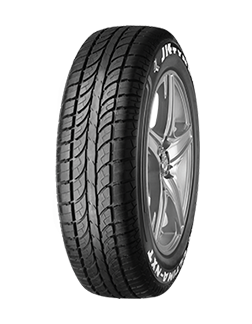
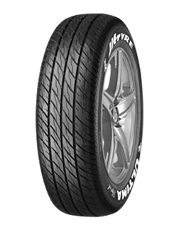
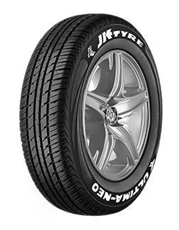

ULTIMA NXT
SPECIFICATIONS:

BENEFITS:
HIGH DURABILITYEXCELLENT PUNCTURE RESISTANCE
ENSURES VEHICLE STABILITY ON SHARP CURVES AND HIGH SPEEDS
IMAGE:

ULTIMA SPORT
SPECIFICATIONS:
| AVAILABLE IN SIZES | SUGGESTED VEHICLE APPLICATION |
|---|---|
| 165/70 R 12 (TL) | Hyundai - EON Maruti - ALTO , ZEN |
| 165/65 R 13 (TL) | Tata-INDICA(V2 XETA PETROL, LE/LGI/LSI, EV2 XETA, LPG), V2 (DLS INDICAB, TURBO) Maruti-WAGONR Hyundai-SANTRO |
| 175/60 R 13 (TL) | Tata-INDICA Maruti-WAGONR Hyundai-SANTRO |
| 185/60 R 13 (TL) | Tata-UPSIZE TO SELECT 13 INCH SIZES INDICA Hyundai-UPSIZE TO SELECT 13 INCH SIZES SANTRO |
| 165/65 R 14 (TL) | Tata-GM BEAT DIESEL, INDICA EV2 LX DIESEL, INDICA V2 (TURBO/DICOR) Maruti-UPSIZE TO NEW WAGONR 2010 VX Chevrolet-BEAT PETROL |
| 165/80 R 14 (TL) | Fiat-PUNTO GRANDE (1.2, 1.3, 1.4) Maruti-SWIFT, DZIRE (L/V-X/D-I), RITZ (L/V-X-I) Chevrolet-GM ASTRA |
| 185/60 R 14 (TL) | Chevrolet-GM AVEO (LS1.4 / LT1.6), U-VA 1.2 LT Hyundai-ACCENT (GTX TORNADO / VIVA) SKODA-SKODA FABIA 1.2/1.4/1.6 NEW FABIA ELEGANCE |
| 185/65 R 14 (TL) | Chevrolet-CHEVROLET OPTRA SRV Hyundai-I20 SPORTZ,HYUNDAI VERNA TRANSFORM 1.5 VTVT/CRD Volkswagen-UPSIZE TO 175/70 R14 POLO, VENTO |
| 195/60 R 14(TL) | UPSIZE TO 175/65 R 14,175/70 R 14 & 185/65 R 14 |
BENEFITS:
SHORTEST BRAKING AT HIGH SPEEDSENHANCED STEERING MANEUVERABILITY
FUEL EFFICIENCY
IMAGE:

ULTIMA NEO
SPECIFICATIONS:
| AVAILABLE IN SIZES | SUGGESTED VEHICLE APPLICATION |
|---|---|
| 145/80 R 12 (TL) | Hyundai - ECON D-LITE(O) & ERA Maruti- ALTO (ALL VARIANTS),ZEN(ALL VARIANTS),ALTO-800(LX/LXI) |
| 145/80 R 13 (TL) | Suzuki-WAGON R 2010LX,LXI Fiat - UNO |
| 155/70 R 13 (TL) | Hyundai-SANTRO (ALL VARIANTS),EON (MAGNA, SPORTZ) Chevrolet-SPARK |
| 155/65 R 13 (TL) | Maruti - ALTO K10,WAGON R VXI,ZEN ESTILLO VXI,NEW ZEN ESTILLO (ALL VARIANTS) |
| 155/80 R 13 (TL) | Hyundai-I10/KAPPA,GETZ Maruti - A-STAR,ESTEEM,VERSA Tata - INDICA EV2 (PETROL) Chevrolet -AVEO U-VA 1.2LS & 1.2 Ford - FORD IKON LXI |
BENEFITS:
HIGHER FUEL SAVINGSDRIVE COMFORT
ENHANCED STEERING
IMAGE:
